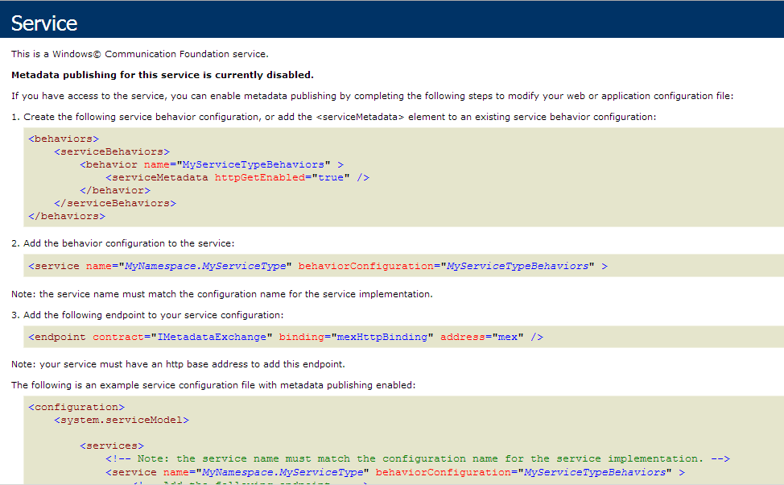
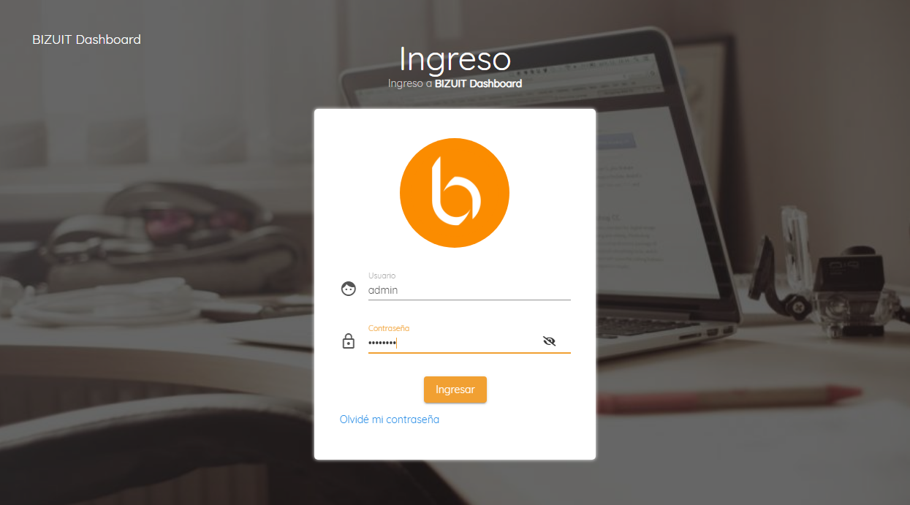
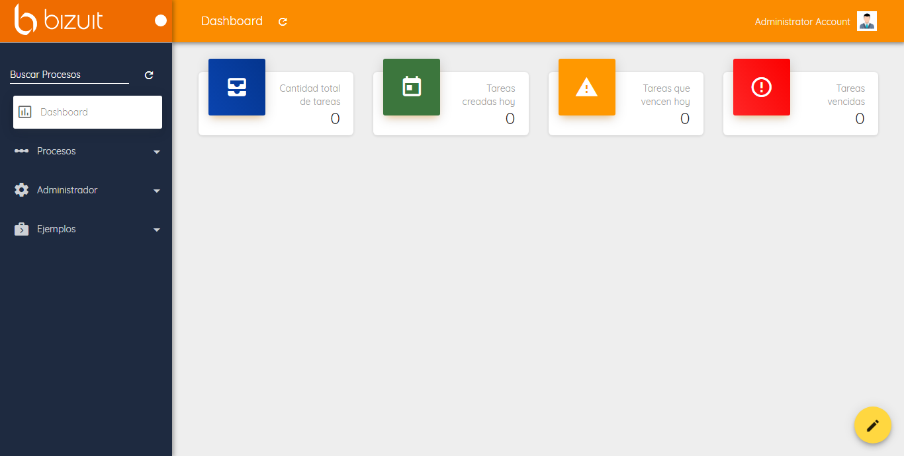
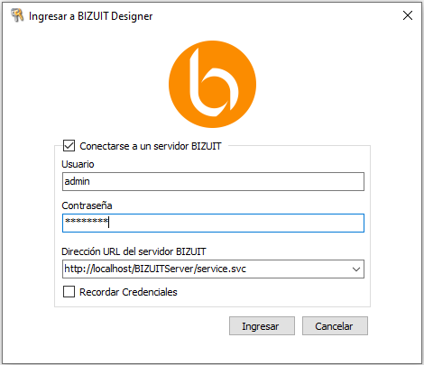
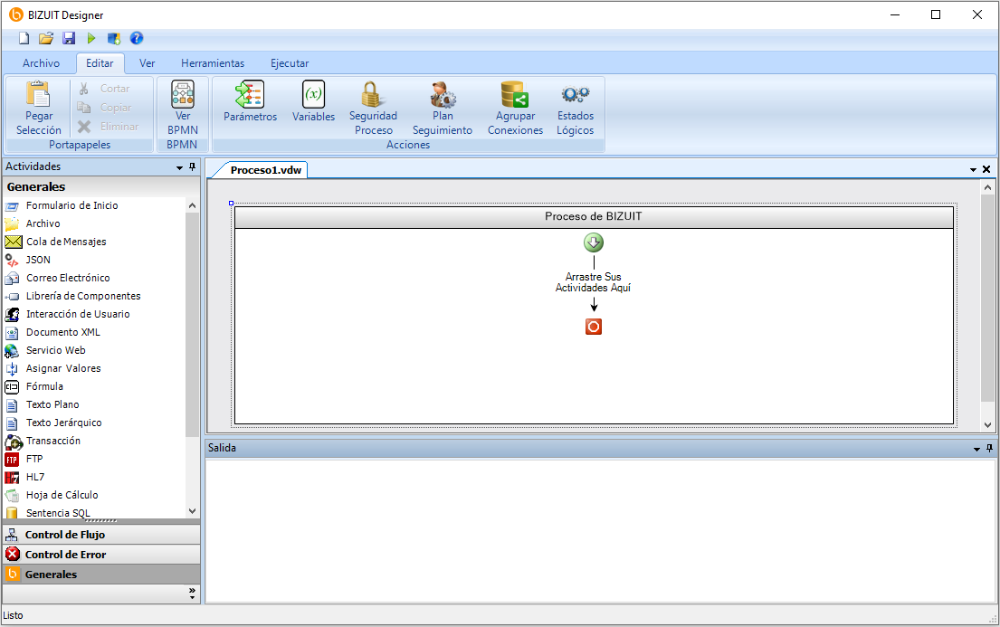

Una vez finalizadas las instalaciones de BIZUIT Dashboard Server, BIZUIT Server y BIZUIT Designer se debe proceder a comprobar la correcta instalacion de la plataforma en su conjunto siguiendo los siguientes pasos:
1) Comprobar la correcta instalación de BIZUIT Server
- En Panel de Control/Herramientas Administrativas/Servicios de Internet Information Services seleccione el sitio web y directorio virtual ingresado en el paso 2 de la instalación de BIZUIT Server.
- Haga clic con el botón derecho del Mouse sobre el archivo Service.svc y seleccione la opción “Examinar”, lo cual debe mostrar en el navegador una pantalla como la siguiente:

2) Comprobar la correcta instalación de BIZUIT Dashboard
- En Panel de Control/Herramientas Administrativas/Servicios de Internet Information Services seleccione el sitio web y directorio virtual ingresado en el paso 2 de la instalación de BIZUIT Dashboard Server.
- Haga clic con el botón derecho del Mouse sobre el archivo default.aspx y seleccione la opción “Examinar”, lo cual debe mostrar en el navegador una pantalla como la siguiente:

- Ingrese con el usuario admin y contraseña admin123 (usuario administrador por defecto) y debería visualizar la siguiente pantalla:

3) Comprobar la correcta instalación de BIZUIT Designer
- En Menú Inicio-Todos los programas-Tycon S.A. seleccione Tycon BIZUIT Designer 4. Se presentará una pantalla de ingreso:

- Ingrese con el usuario admin y contraseña admin123 (usuario administrador por defecto)
- En el campo Dirección URL del servidor BIZUIT ingrese la url de BIZUIT Server configurado en este paso del procedimiento de instalación de BIZUIT Server (por ejemplo http://miserver/BIZUITServer/service.svc).
- Haga clic en "Iniciar", si la aplicación se instaló correctamente se presentará la siguiente pantalla:

Anterior / Siguiente